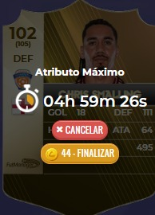

No tópico anterior (caso perdeu clique aqui para ver), foram apresentadas três formas de adquirir/formar jogadores, etapa fundamental que antecede o início do processo de treinamento.
Dando continuidade, neste tópico abordaremos as estratégias voltadas ao desenvolvimento dos atletas, com foco na aplicação dos treinamentos e na utilização eficiente da equipe B, visando potencializar a evolução dos jogadores e maximizar o desempenho do elenco.
Ressaltamos a importância de que todos os managers priorizem a evolução máxima das instalações do clube, garantindo assim melhores condições de treinamento, maior eficiência no desenvolvimento dos jogadores.
- Estruturas → Centro de treinamento
Ao acessar esta página, estarão disponíveis diversas opções de treinamento, sendo elas:
- Treino de atributos
- Condição física
- Entrosamento
- Atributo Máximo
- Habilidade especial
- Diminuir idade
- Evoluir card
Neste momento, o foco será direcionado para três funcionalidades principais: Treino de Atributos, Atributo Máximo e Habilidade Especial. As demais opções serão abordadas em tópicos futuros. Inicialmente, é fundamental que os managers concentrem seus esforços na evolução por meio do Treino de Atributos e do Atributo Máximo. A funcionalidade de Habilidade Especial será introduzida de forma antecipada, considerando sua futura relevância no desenvolvimento dos jogadores.
Antes de mais nada, é importante compreender a mecânica de funcionamento dos treinamentos no jogo. O sistema permite que apenas um tipo de treino seja realizado por vez, independentemente da opção escolhida. Todos os treinamentos possuem um tempo de execução, que será detalhado posteriormente. Durante esse período, não é possível iniciar outro tipo de evolução no mesmo jogador. Por exemplo, caso o atleta esteja em processo de Treino de Atributos, não será possível utilizar simultaneamente as funcionalidades de Atributo Máximo ou Habilidade Especial. Dessa forma, é necessário aguardar a finalização completa do treinamento em andamento para iniciar um novo. Essa regra se aplica a todas as sete opções de treino disponíveis, exigindo planejamento por parte do manager para otimizar o desenvolvimento dos jogadores. Em resumo, cada atleta pode realizar apenas um treinamento por vez, sendo fundamental organizar a sequência de evoluções de forma estratégica para maximizar a eficiência e os resultados.
Treino de atributos
Nesta funcionalidade, é possível evoluir os atributos do jogador de forma geral. Conforme mencionado anteriormente, cada atleta possui três atributos: principal, secundário e terciário. Caso esses atributos ainda não tenham atingido seus níveis máximos, esta será a opção responsável por sua evolução. Dessa forma, sempre que houver a necessidade de aumentar o nível de qualquer atributo do jogador, o Treino de Atributos deverá ser utilizado. Ressalta-se que, após atingir o nível máximo dos atributos, essa opção deixa de ter utilidade e a bolinha ficará bloqueada impedindo de treinar. A partir desse ponto, será necessário utilizar a funcionalidade de Atributo Máximo para dar continuidade à evolução do jogador, até que a carta alcance seu overall máximo.
Demonstração Prática (Imagens)A seguir, serão apresentadas imagens ilustrativas com o objetivo de demonstrar, na prática, todo o processo de treinamento abordado anteriormente, facilitando a compreensão das etapas e da aplicação das funcionalidades dentro do jogo.
Ao acessar a opção de treinamento, o manager deverá selecionar o jogador desejado, escolher o atributo que pretende evoluir e marcar a respectiva opção. Em seguida, basta clicar em “Treinar” para iniciar o processo.
Após a confirmação, o sistema exibirá o tempo restante para a conclusão do treino. No exemplo apresentado, o tempo indicado é de 05h30, ao final do qual o atributo de defesa do jogador será elevado para 114. Cada sessão de treino, neste caso exemplificado, concede 3 pontos de evolução, resultado do nível máximo do Centro de Treinamento aliado à liga em que o clube está inserido (Amador). No seu caso poderá ser diferente
 👉
👉  👉
👉
Outro ponto importante a ser observado é que atributos que já atingiram seu limite máximo ficam automaticamente bloqueados para novos treinamentos. No exemplo, os atributos de habilidade e ataque não estão disponíveis, pois já alcançaram seus valores máximos — sendo a habilidade exibida como 98/98 e o ataque como 64/64.
Por fim, mesmo com atributos já maximizados, ainda é possível evoluir o jogador caso ele não tenha atingido seu overall máximo. No cenário apresentado, o card encontra-se com overall 105, enquanto seu limite é 109. Isso permite a utilização da funcionalidade de Atributo Máximo, liberando um novo nível no atributo escolhido, como no caso da habilidade, que poderá evoluir de 98 para 99.
Atributo máximo
O recurso de Atributo Máximo é uma das etapas mais importantes no processo de evolução de um jogador dentro do Futmanager. Ele permite ao manager elevar, de forma direta e estratégica, um nível adicional em um atributo específico do atleta, mesmo quando os treinos convencionais já foram utilizados.
Diferente do Treino de Atributos, que evolui os status de forma progressiva até seus limites naturais, o Atributo Máximo atua como um incremento final, sendo essencial para alcançar o potencial máximo (overall) da carta.
A principal finalidade dessa funcionalidade é garantir que o jogador atinja seu teto de desempenho. Por isso, sua utilização deve ser planejada com atenção, priorizando sempre o atributo mais relevante para a posição do atleta, potencializando assim seu rendimento dentro de campo.
É importante destacar que o uso do Atributo Máximo possui um limite: uma vez que o jogador atinge seu overall máximo, essa opção se torna indisponível e não poderá mais ser aplicada. Portanto, trata-se de um recurso finito e estratégico, que deve ser utilizado no momento adequado para extrair o máximo desempenho da carta.
Demonstração Prática (Imagens)A seguir, serão apresentadas imagens ilustrativas com o objetivo de demonstrar, na prática, todo o processo de treinamento abordado anteriormente, facilitando a compreensão das etapas e da aplicação das funcionalidades dentro do jogo.
Ao acessar a página de treinamento, o manager deverá selecionar a opção Atributo Máximo, escolher o jogador desejado, definir qual atributo será evoluído e, em seguida, clicar em “Treinar” para iniciar o processo.
No exemplo apresentado, considerando a liga em que estamos (Amador), a utilização dessa funcionalidade tem o custo de 12 moedas e um tempo de conclusão de 10 horas.
Após esse período, o atributo selecionado será incrementado em 1 ponto. No caso demonstrado, o atributo de defesa passará de 116 para 117 ao término do treinamento, conforme ilustrado na imagem. Dessa forma, o Atributo Máximo atua como um recurso essencial para evolução final do jogador, permitindo ultrapassar os limites naturais dos atributos e avançar em direção ao overall máximo da carta.
 👉
👉  👉
👉 
Habilidade especial
A funcionalidade de Habilidade Especial atua de forma diferenciada no desenvolvimento do jogador. Ao ser aplicada, ela adiciona um bônus adicional ao atleta, que é exibido separadamente por meio de um ícone vermelho ao lado do card.
Esse bônus não altera diretamente o valor exibido do atributo principal na interface do jogo, mas é considerado internamente durante as simulações das partidas, impactando diretamente o desempenho do jogador em campo.
Por exemplo, ao utilizar um atacante da categoria “Mito”, cujo atributo principal é o ataque, com valor base de 100, ao receber +4 pontos de Habilidade Especial (valor máximo para essa categoria), o atributo continuará sendo exibido como 100. No entanto, nas simulações, o jogador atuará como se tivesse 104 de ataque.
É importante ressaltar que esse comportamento não se trata de um erro, mas sim de uma mecânica própria do jogo, desenvolvida para adicionar uma camada estratégica adicional ao gerenciamento dos atletas.
Por fim, a utilização da Habilidade Especial possui um custo de 50 créditos, sendo fundamental que sua aplicação seja feita de forma planejada e estratégica, então só use caso tenha muitas moedas
Equipe B
A Equipe B exerce uma função semelhante ao Treino de Atributos, porém com uma dinâmica diferenciada e extremamente vantajosa para o desenvolvimento dos jogadores.
Quando utilizada em seu nível máximo, a Equipe B realiza evoluções automáticas nos atributos do atleta a cada 24 horas, concedendo entre 2 a 5 pontos de treino. Esse processo contribui significativamente para acelerar a evolução do jogador ao longo do tempo.
O grande diferencial da Equipe B está na possibilidade de evolução simultânea. Diferentemente dos treinamentos convencionais — nos quais é permitido apenas um tipo de treino por vez — a Equipe B continua gerando evolução mesmo quando o jogador está passando por outro tipo de treinamento, como o Atributo Máximo.
Na prática, isso significa que, enquanto o atleta está em processo de evolução por Atributo Máximo, ele também pode estar alocado na Equipe B, recebendo progressos adicionais de forma paralela. Dessa forma, o jogador evolui em duas frentes ao mesmo tempo, otimizando tempo e recursos.
Em resumo, a utilização estratégica da Equipe B é fundamental para maximizar a eficiência do desenvolvimento dos atletas, permitindo uma progressão mais rápida e contínua sem a limitação de um único treino ativo.

Na imagem apresentada, é possível observar que, após o período de 24 horas, o jogador recebeu a evolução de 2 pontos em um de seus atributos por meio da Equipe B.
Simultaneamente, durante esse mesmo período, o atleta também estava em processo de evolução pelo recurso de Atributo Máximo, o que resultou no ganho adicional de +1 ponto nesse atributo específico.
Na prática, isso demonstra a principal vantagem da Equipe B: a possibilidade de evolução paralela. Enquanto o jogador evolui +1 ponto via Atributo Máximo, ele também pode receber entre 2 a 5 pontos adicionais em outro atributo através da Equipe B.
No exemplo ilustrado, o atributo de gol evoluiu de 16 para 18. Além disso, no momento atual, o jogador segue em treinamento de Atributo Máximo (+1 ponto em andamento) e, em aproximadamente 3 horas, receberá um novo incremento da Equipe B, que deverá variar entre 2 a 5 pontos. Considerando o cenário apresentado, a defesa provavelmente evoluirá de 111 para, no mínimo, 113.
Esse exemplo reforça a importância da utilização estratégica da Equipe B em conjunto com outros treinamentos, potencializando significativamente a velocidade de evolução do jogador.
Tempo para treinamento e bônus nos treinamento
Abaixo estão detalhados os custos e tempos de execução dos principais tipos de treinamento, de acordo com a categoria da carta:
Treino de Atributos
- Carta Bronze: custo de 75.000 euros, duração de 8 horas, concedendo +2 pontos de treinamento
- Carta Prata: custo de 200.000 euros, duração de 8 horas, concedendo +2 pontos de treinamento
- Carta Ouro: custo de 350.000 euros, duração de 5h30, concedendo +3 pontos de treinamento
Atributo Máximo
- Carta Bronze: custo de 2 créditos, duração de 8 horas
- Carta Prata: custo de 7 créditos, duração de 8 horas
- Carta Ouro: custo de 12 créditos, duração de 10 horas
⚠️ Os custos apresentados podem sofrer variações, podendo estar desatualizados ou divergentes em função do nível das instalações e das ligas envolvidas. Dessa forma, as informações devem ser consideradas apenas como referência para fins de baseamento e análise inicial.
Existem formas de acelerar o processo de treinamento, tanto gratuitas quanto pagas.
De forma gratuita, o manager pode obter o item “Tempo de Treinamento” através de baús — como os provenientes de missões diárias. Esses itens possuem durações variadas, podendo ser de 3, 6 ou 12 horas. Durante o período ativo, todos os treinamentos terão seu tempo reduzido.
Além disso, o jogo também disponibiliza esse tipo de benefício em eventos sazonais, como Carnaval, Páscoa, Copa do Mundo e eventos de final de ano, onde por tempo limitado é possível obter bônus semelhantes.
Já na forma paga, o manager pode adquirir na loja o item “Tempo de Treinamento” por 100 créditos, garantindo um bônus de 24 horas, no qual todos os treinamentos têm seu tempo reduzido em 50%.
Na prática, isso significa uma otimização significativa no desenvolvimento dos jogadores. Como exemplo, ao ativar um bônus de 6 horas obtido em um baú, todos os treinamentos em andamento passam a ter seu tempo reduzido pela metade durante esse período.
Considerando um caso anterior, onde um treinamento de Atributo Máximo possuía duração de 10 horas, com o bônus ativo, esse tempo é reduzido para apenas 5 horas, acelerando diretamente a evolução do atleta.
 👉
👉 
- sujeito a alterações #SAF